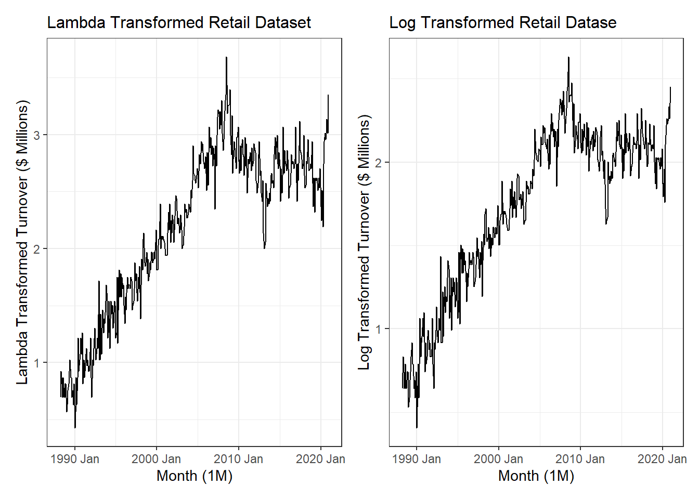
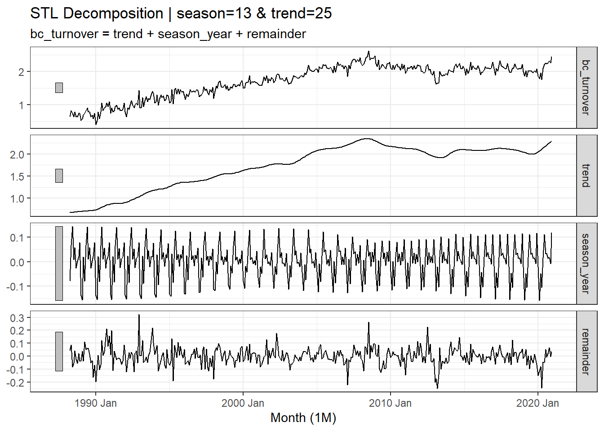
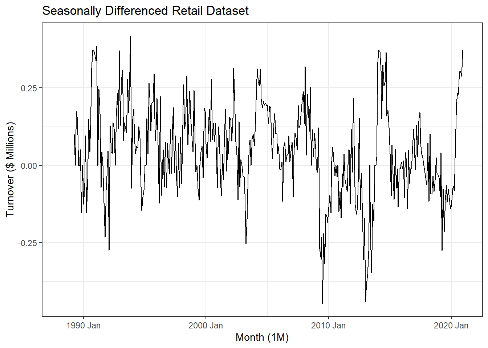
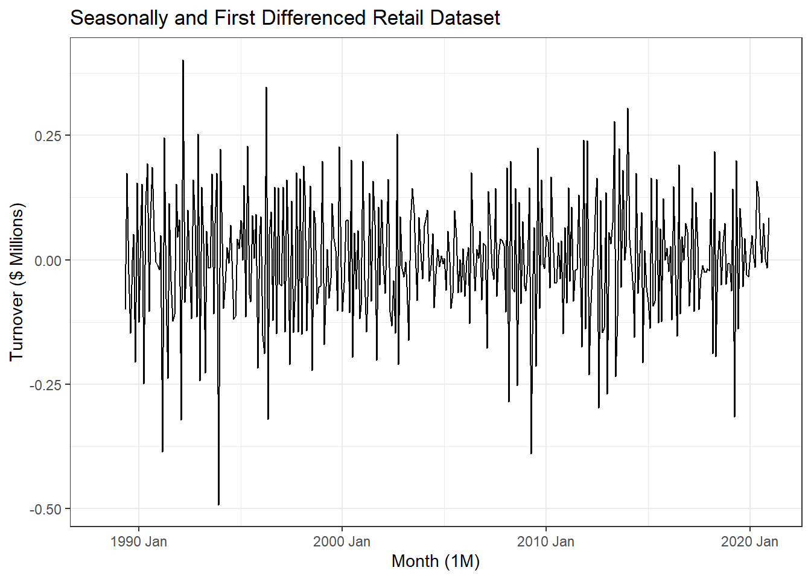
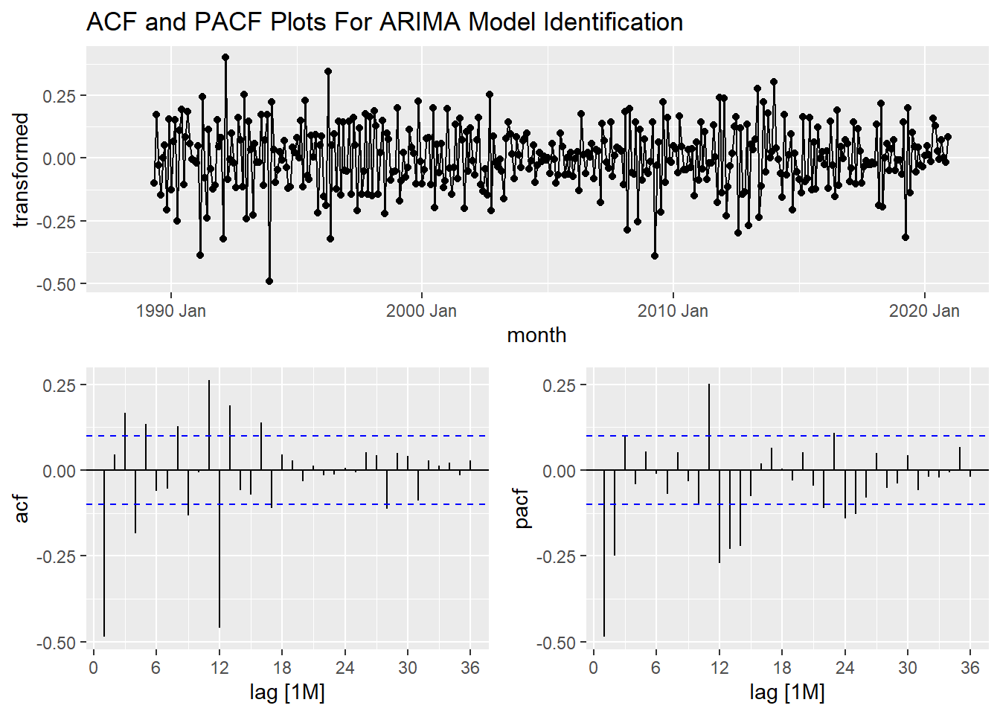
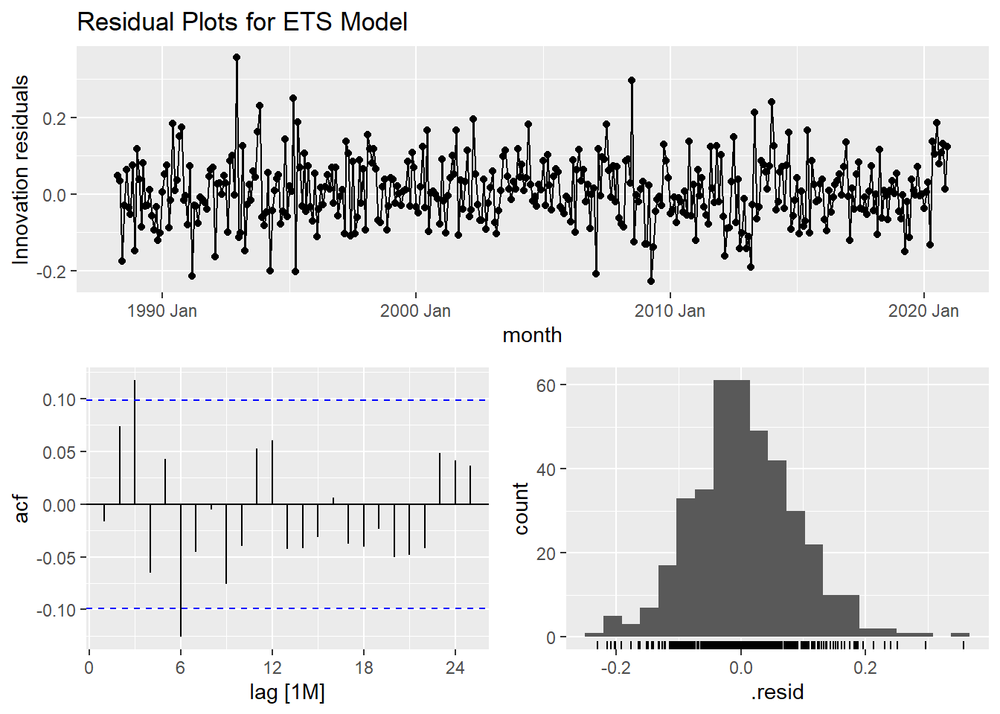
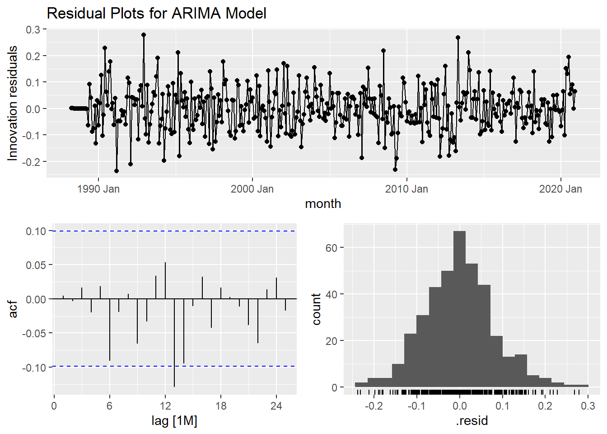
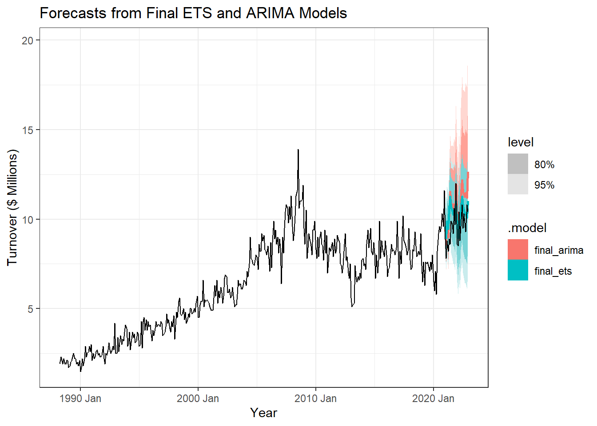
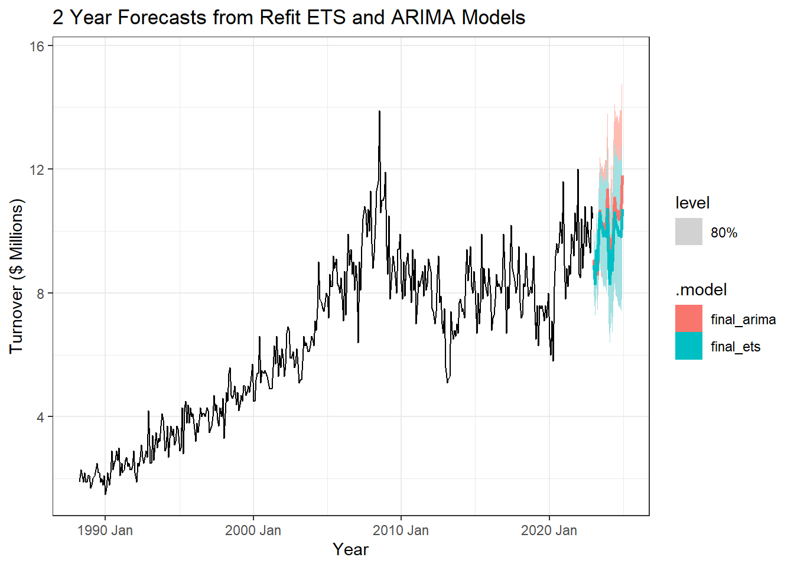
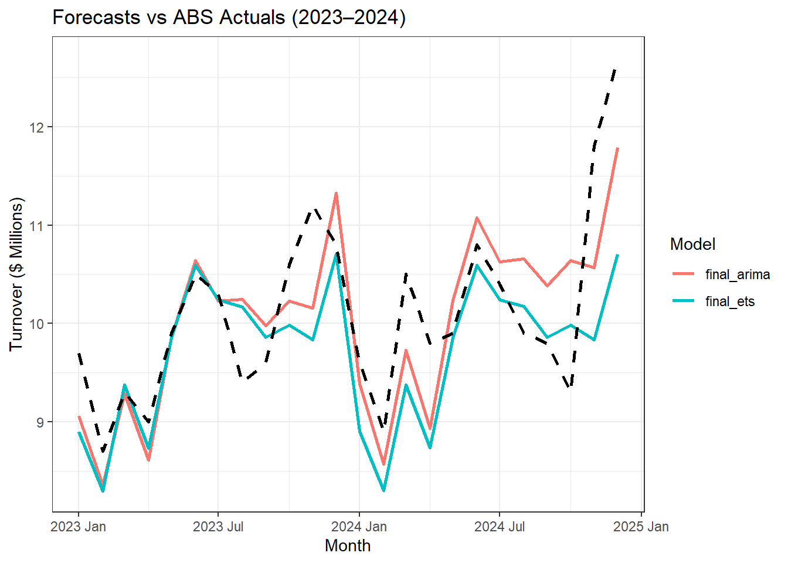

| state | industry | series_id | month | turnover |
|---|---|---|---|---|
| Northern Territory | Furniture, floor coverings, houseware and textile goods retailing | A3349526J | 1988 Apr | 1.9 |
| Northern Territory | Furniture, floor coverings, houseware and textile goods retailing | A3349526J | 1988 May | 2.3 |
| Northern Territory | Furniture, floor coverings, houseware and textile goods retailing | A3349526J | 1988 Jun | 2.1 |
| Northern Territory | Furniture, floor coverings, houseware and textile goods retailing | A3349526J | 1988 Jul | 1.9 |
| Northern Territory | Furniture, floor coverings, houseware and textile goods retailing | A3349526J | 1988 Aug | 2.2 |
| Northern Territory | Furniture, floor coverings, houseware and textile goods retailing | A3349526J | 1988 Sep | 1.9 |
Applied Retail Forecasting
1 Overview
This project applies classical time series forecasting techniques to Australian retail turnover data, with a focus on furniture and household goods retailing in the Northern Territory of Australia. Using monthly data published by the Australian Bureau of Statistics, the analysis aims to understand the underlying structure of the series and assess how different forecasting approaches perform in practice.
The workflow follows a standard applied forecasting process. The data are first explored to identify trends, seasonality, and structural changes, including the impact of major economic events such as COVID-19. Variance-stabilising transformations and decomposition techniques are then used to better understand the series before fitting and evaluating models.
Two model families are considered: Exponential Smoothing State Space (ETS) models and Seasonal ARIMA models. Model selection is guided by a combination of information criteria, residual diagnostics, and out-of-sample performance using a 24-month test set. Forecast accuracy is further assessed by comparing model predictions to subsequently released ABS data.
The goal of this project is not only to produce forecasts, but to demonstrate a transparent and defensible forecasting workflow, highlighting the trade-offs between model interpretability, stability, and responsiveness when applied to real-world economic data.
2 Data
This analysis uses monthly retail turnover data from the Australian Bureau of Statistics (ABS), Retail Trade, Table 11.
The series represents turnover for furniture, floor coverings, houseware and textile goods retailing in the Northern Territory of Australia, measured in millions of Australian dollars. The data span April 1988 to December 2022 and are observed at a monthly frequency. A small sample of the dataset is shown below.
3 Exploratory Data Analaysis (EDA)
Exploratory analysis is used to understand the overall structure of the retail turnover series before any modeling is performed. This includes examining long-term trends, seasonal patterns, and changes in variability over time, as well as identifying potential structural breaks linked to broader economic conditions.
A set of time series visualizations are used to assess these features. These plots help determine whether the series exhibits trend and seasonality, whether variance appears constant over time, and whether there are periods of unusually high or low volatility. Particular attention is given to changes around major events such as the mining boom period and the COVID-19 pandemic, both of which are expected to have influenced retail behaviour in the Northern Territory.
The insights from this exploratory stage inform later decisions around transformation, decomposition, and model selection.
3.1 Trend, seasonality, and structural features


The dataset captures monthly retail turnover for furniture, floor coverings, houseware and textile goods retailing in the Northern Territory, spanning April 1988 to December 2022.
The time series plot in Figure 1 shows a clear upward long-term trend, indicating sustained growth in retail turnover over the sample period. Seasonal behaviour is also evident, with fluctuations that increase in magnitude as the level of the series rises, suggesting multiplicative seasonality. A pronounced increase in turnover is observed between approximately 2007 and 2009, which likely reflects the effects of the Northern Territory mining boom during that period. Following this, turnover declines sharply post-2010, potentially linked to the global financial crisis and the subsequent slowdown in mining-related economic activity.
In the years leading up to 2020, turnover appears relatively subdued before rising again during and after the COVID-19 period. While many industries experienced contraction during this time, the increase observed here may reflect shifts in household behaviour, with greater emphasis on home-related spending as lifestyles adjusted. Given the broad scope of this retail category, multiple overlapping factors are likely influencing the observed dynamics.
The seasonal plot in Figure 2 highlights strong and consistent seasonal patterns across years. Turnover tends to peak in June and December, while lower values are commonly observed around February and April. The regular repetition of these patterns supports the presence of true seasonality rather than irregular cyclical effects. Although the exact drivers are not directly observed in the data, these patterns may be associated with factors such as end-of-financial-year spending, holiday periods, and seasonal changes in consumer behaviour.
The subseries plot in Figure 3 further reinforces these findings by displaying monthly behaviour across the full time span. Each month exhibits a distinct seasonal profile, while also reflecting the broader upward movement in turnover over time. June and December consistently record higher average turnover, whereas February and April remain comparatively weaker months. The horizontal reference lines representing monthly means make these differences particularly clear.
One notable feature in the subseries plot is an unusually high turnover value observed in July around 2007. This may represent a genuine economic anomaly linked to exceptional conditions during that period, although the possibility of a data irregularity cannot be ruled out. Overall, the exploratory analysis confirms the presence of trend, seasonality, and changing variance, all of which are important considerations for subsequent transformation and model selection.
3.2 Data transformation and decomposition
This section focuses on preparing the series for modelling by addressing changing variance and separating the underlying components of the time series. These steps help ensure that subsequent models are applied to data that are more stable and interpretable.
3.2.1 Variance stabilisation using the Box–Cox transformation

To stabilize the variance of the series and address heteroskedasticity, a Box–Cox transformation is applied to the retail turnover data. The transformation parameter λ is selected using the Guerrero method, which chooses the value that minimizes variability across seasonal subseries. Applying this procedure yields an estimated λ value of 0.242.
Figure Figure 4 compares the Box–Cox transformation using the Guerrero-estimated value with a log transformation, corresponding to λ = 0. Both transformations reduce variance instability relative to the original series; however, the log-transformed series exhibits slightly tighter peaks and troughs, indicating more consistent variance across seasonal periods. The estimated value being close to zero suggests that a log transformation is sufficient in practice.
Overall, comparison with the original series in Figure 1 indicates that the transformation is effective in achieving approximate variance stability, making the data more suitable for subsequent decomposition and time series modelling.
3.2.2 Seasonal-trend decomposition using STL

Following variance stabilization, the transformed series is decomposed using STL to separate the trend, seasonal, and remainder components. This helps assess whether seasonality is stable over time and whether any meaningful structure remains unexplained.
Because the series spans multiple decades, STL parameters are adjusted rather than relying on defaults. The seasonal window is set to 13 to allow the seasonal component to vary smoothly while still reflecting an annual cycle, which is appropriate for monthly retail data where recurring patterns such as end-of-financial-year and holiday periods are expected. The trend window is set to 25 to capture medium-term movements (roughly two years), allowing the trend component to reflect gradual shifts associated with changing economic conditions in the Northern Territory.
Given the presence of irregular spikes and sharp movements, particularly between 2007 and 2022, robust = TRUE is used to reduce the influence of extreme observations on the estimated components. With these settings, the decomposition in Figure 5 shows a well-defined long-term trend, a stable seasonal pattern, and a remainder that appears largely noise-like, suggesting that the major structure of the series has been captured.
Overall, the STL decomposition confirms that this turnover series is characterized by a persistent long-run trend and consistent seasonal variation year to year, supporting the use of seasonal forecasting models in later sections.
3.2.3 Stationarity and differencing
# A tibble: 1 × 2
kpss_stat kpss_pvalue
<dbl> <dbl>
1 5.46 0.01# A tibble: 1 × 1
nsdiffs
<int>
1 1# A tibble: 1 × 1
ndiffs
<int>
1 1# A tibble: 1 × 2
kpss_stat kpss_pvalue
<dbl> <dbl>
1 0.0340 0.1


Before fitting ARIMA models, the series must be made stationary by removing any remaining trend and seasonal structure. Visual inspection of the original series in Figure 1 confirms the presence of both trend and seasonality, while the Box–Cox transformation applied earlier successfully stabilizes variance, as seen in Figure 4.
To formally assess stationarity and guide differencing decisions, a set of unit root tests are applied to the transformed series. The KPSS test results in Table 1 return a p-value of 0.01, providing evidence against stationarity in the undifferenced series. Automated differencing diagnostics suggest applying one seasonal difference (Table 2) and one regular difference (Table 3).
After applying both a seasonal difference of order 12 and a first-order difference, the KPSS test is repeated on the fully differenced series. The resulting p-value of 0.1 in Table 4 indicates that there is no strong evidence against stationarity, suggesting that the differencing strategy has been effective.
This progression is also reflected visually. The seasonally differenced series shown in Figure 6 no longer exhibits clear seasonal patterns, but still displays some residual structure. Applying an additional first-order difference yields the series in Figure 7, which fluctuates around a constant mean with no obvious trend or seasonality, consistent with a stationary process.
Overall, these results indicate that one seasonal difference and one regular difference are sufficient to achieve stationarity, providing an appropriate foundation for ARIMA model identification in the next section.
4 Model Identification and Selection
4.1 Candidate model specification
4.1.1 Exponential smoothing (ETS) models
Based on the exploratory analysis, the series exhibits a clear trend, strong seasonality, increasing variance, and occasional sharp movements. These characteristics motivate the use of exponential smoothing models that can accommodate trend damping and multiplicative effects.
A set of candidate ETS models is considered. All models use a damped additive trend to reflect the expectation that long-run growth may flatten over time, particularly given the observed fluctuations in the series. The shortlisted models include:
- an additive Holt–Winters specification,
- a hybrid model with multiplicative errors and additive seasonality,
- a fully multiplicative specification,
- and an automatically selected ETS model.
These candidates allow comparison between different assumptions about how variance and seasonal effects scale with the level of the series.
4.1.2 ARIMA model identification

ARIMA model identification is guided by the autocorrelation and partial autocorrelation functions of the transformed and differenced series, shown in Figure 8. One regular difference and one seasonal difference are retained, consistent with the stationarity analysis in the previous section, resulting in a baseline structure of (0,1,0)(0,1,0)[12].
Inspection of the ACF suggests the presence of a non-seasonal moving average component at lag 1, while the PACF indicates a potential non-seasonal autoregressive component at lag 2. At the seasonal level, a significant spike at lag 12 in the ACF suggests a seasonal MA(1) term, while spikes at lags 12 and 24 in the PACF indicate a possible seasonal AR(2) structure.
Based on these patterns, two candidate ARIMA specifications are selected: (2,1,0)(2,1,0)[12] and (2,1,0)(0,1,1)[12], alongside an automatically selected ARIMA model.
5 Model comparison using information criteria
5.1 ETS model comparison
Series: turnover
Model: ETS(M,A,M)
Smoothing parameters:
alpha = 0.4742735
beta = 0.0001020771
gamma = 0.09602882
Initial states:
l[0] b[0] s[0] s[-1] s[-2] s[-3] s[-4] s[-5]
1.972875 0.01933869 1.003071 0.850079 0.8493874 1.127858 1.009289 1.006564
s[-6] s[-7] s[-8] s[-9] s[-10] s[-11]
0.9638753 1.036554 1.000923 1.164525 1.057154 0.930721
sigma^2: 0.0073
AIC AICc BIC
1786.523 1788.155 1854.078 # A tibble: 4 × 9
.model sigma2 log_lik AIC AICc BIC MSE AMSE MAE
<chr> <dbl> <dbl> <dbl> <dbl> <dbl> <dbl> <dbl> <dbl>
1 ETS_auto 0.00734 -876. 1787. 1788. 1854. 0.289 0.350 0.0648
2 ETS_MAdA 0.00759 -880. 1797. 1798. 1868. 0.309 0.389 0.0658
3 ETS_MAdM 0.00764 -881. 1797. 1799. 1869. 0.290 0.355 0.0652
4 ETS_AAdA 0.311 -936. 1908. 1909. 1979. 0.298 0.372 0.411 The candidate ETS models are fitted to the training data and compared using the Akaike Information Criterion (AIC), with results summarized in Table 5. The automatically selected ETS model, ETS(M,A,M), achieves the lowest AIC, indicating the best in-sample fit among the specifications considered.
However, the damped-trend models ETS(M,Ad,A) and ETS(M,Ad,M) perform comparably in terms of AIC, with only marginally higher values. Given their damped trend structure, these models remain plausible alternatives, particularly if long-run growth is expected to slow.
Note: ETS models are fitted to the original turnover series, as exponential smoothing methods natively accommodate trend and seasonality without requiring prior differencing or transformation.
5.2 ARIMA model comparison
# A mable: 3 x 2
# Key: Model name [3]
`Model name` Orders
<chr> <model>
1 model1 <ARIMA(2,1,0)(2,1,0)[12]>
2 model2 <ARIMA(2,1,0)(0,1,1)[12]>
3 auto <ARIMA(2,1,0)(0,1,1)[12]># A tibble: 3 × 6
.model sigma2 log_lik AIC AICc BIC
<chr> <dbl> <dbl> <dbl> <dbl> <dbl>
1 model2 0.00708 395. -781. -781. -766.
2 auto 0.00708 395. -781. -781. -766.
3 model1 0.00817 373. -736. -736. -717.A similar comparison is conducted for the ARIMA candidates. The automatically selected ARIMA model matches the manually specified (2,1,0)(0,1,1)[12] model, as shown in Table 6. Both specifications achieve the lowest AIC values in Table 7, indicating strong in-sample performance relative to the alternative candidate.
5.3 Test-set evaluation and final model selection
# A tibble: 4 × 10
.model .type ME RMSE MAE MPE MAPE MASE RMSSE ACF1
<chr> <chr> <dbl> <dbl> <dbl> <dbl> <dbl> <dbl> <dbl> <dbl>
1 ETS_MAdA Test -0.672 1.01 0.879 -7.69 9.55 NaN NaN 0.178
2 ETS_AAdA Test -0.823 1.12 0.976 -9.40 10.7 NaN NaN 0.124
3 ETS_auto Test -0.840 1.13 0.961 -9.23 10.3 NaN NaN 0.174
4 ETS_MAdM Test -1.02 1.27 1.08 -11.1 11.6 NaN NaN 0.164# A tibble: 3 × 10
.model .type ME RMSE MAE MPE MAPE MASE RMSSE ACF1
<chr> <chr> <dbl> <dbl> <dbl> <dbl> <dbl> <dbl> <dbl> <dbl>
1 auto Test -1.14 1.35 1.16 -12.3 12.4 NaN NaN 0.0300
2 model2 Test -1.14 1.35 1.16 -12.3 12.4 NaN NaN 0.0300
3 model1 Test -1.46 1.78 1.46 -15.3 15.3 NaN NaN 0.306 To assess out-of-sample performance, all shortlisted ETS and ARIMA models are evaluated on a 24-month test set. Forecast accuracy metrics for ETS and ARIMA models are reported in Table 8 and Table 9, respectively.
For the ARIMA models, the (2,1,0)(0,1,1)[12] specification achieves both the lowest AIC and the lowest test-set RMSE, and is also selected automatically by the ARIMA procedure. This consistency provides strong support for its selection as the preferred ARIMA model.
For the ETS models, the automatically selected ETS(M,A,M) model achieves the lowest AIC but performs less well on the test set. In contrast, ETS(M,Ad,A) delivers the lowest test-set RMSE among ETS candidates while maintaining a competitive AIC value. Given its superior out-of-sample performance and damped trend structure, ETS(M,Ad,A) is selected as the preferred ETS model.
These two models are carried forward for detailed diagnostics and forecasting in the next section.
6 Model diagnostics and forecasting
6.1 Parameter estimates
Series: turnover
Model: ETS(M,Ad,A)
Smoothing parameters:
alpha = 0.4268619
beta = 0.0001428823
gamma = 0.09580096
phi = 0.9798006
Initial states:
l[0] b[0] s[0] s[-1] s[-2] s[-3] s[-4]
1.935965 0.03466882 0.04304406 -0.3569073 -0.4652471 0.3504102 -0.06845108
s[-5] s[-6] s[-7] s[-8] s[-9] s[-10] s[-11]
-0.03246525 -0.06927204 0.1164343 0.01381827 0.442839 0.1834115 -0.1576145
sigma^2: 0.0076
AIC AICc BIC
1796.565 1798.394 1868.094 Series: turnover
Model: ARIMA(2,1,0)(0,1,1)[12]
Transformation: box_cox(turnover, 0)
Coefficients:
ar1 ar2 sma1
-0.6228 -0.2730 -0.8564
s.e. 0.0494 0.0496 0.0356
sigma^2 estimated as 0.007082: log likelihood=394.69
AIC=-781.38 AICc=-781.27 BIC=-765.61Table Table 10 reports the parameter estimates for the selected ETS(M,Ad,A) model. The level smoothing parameter (α = 0.43) indicates that the model places moderate weight on recent observations when updating the series level. The trend smoothing parameter is close to zero, consistent with the use of a damped trend that evolves slowly over time. The seasonal smoothing parameter (γ = 0.096) suggests relatively stable seasonal patterns, with only gradual updating as new data arrive. The damping parameter (ϕ = 0.98) confirms that the trend is expected to persist in the short term but gradually flatten in the long run.
Parameter estimates for the selected ARIMA(2,1,0)(0,1,1)[12] model are shown in Table 11. The negative autoregressive coefficients indicate mild mean-reverting behaviour, where deviations tend to be followed by partial corrections. The seasonal moving average term captures strong dependence at the annual lag, reflecting the importance of shocks occurring at the same time in previous years. Together, these parameters indicate a model that responds to both short-term fluctuations and seasonal structure.
6.2 Residual diagnostics
Warning: `gg_tsresiduals()` was deprecated in feasts 0.4.2.
ℹ Please use `ggtime::gg_tsresiduals()` instead.

# A tibble: 1 × 3
.model lb_stat lb_pvalue
<chr> <dbl> <dbl>
1 ETS_MAdA 58.5 0.0000212

# A tibble: 1 × 3
.model lb_stat lb_pvalue
<chr> <dbl> <dbl>
1 model2 31.3 0.0686Residual diagnostics are used to assess whether the fitted models have adequately captured the systematic structure in the data. For the ETS model, the residual plots in Figure 9 show several autocorrelation spikes beyond the 95% confidence bounds. This is supported by the Ljung–Box test results in Table 12, which return a very small p-value at lag 24, providing strong evidence against the residuals being white noise. While this suggests that some autocorrelation remains unmodelled, this behaviour is not uncommon for ETS models and does not necessarily preclude good forecasting performance.
In contrast, the residual diagnostics for the ARIMA model in Figure 10 show no substantial autocorrelation remaining, with only a single spike marginally exceeding the confidence bounds. The Ljung–Box test in Table 13 returns a p-value of 0.069, indicating no strong evidence of residual autocorrelation. This suggests that the ARIMA model has captured the underlying dependence structure effectively and produces residuals consistent with white noise.
6.3 Forecasts and prediction intervals

Forecasts from the selected ETS and ARIMA models are shown in Figure 11. Both models generate similar short-term forecasts and capture the recurring seasonal pattern in the data. However, differences emerge in their treatment of longer-term uncertainty.
The ETS model produces smoother forecasts with relatively narrow prediction intervals, reflecting its damped trend structure and assumption of stable long-run behaviour. In contrast, the ARIMA model produces wider prediction intervals, indicating greater sensitivity to recent variability and uncertainty in future dynamics. While both forecasts are plausible, the ARIMA model reflects a higher degree of uncertainty, whereas the ETS model provides more conservative and stable projections.
6.4 Test-set comparison
Both the ETS and ARIMA models perform well on the 24-month test set, capturing the underlying seasonal structure and overall movement in retail turnover. However, differences emerge when comparing forecast accuracy and uncertainty.
The ETS(M,Ad,A) model achieves the lowest RMSE on the test set, as shown in Table 8 and Table 9, indicating superior out-of-sample accuracy. Its forecasts are smoother and more stable, reflecting the damped trend structure and assumption of gradual long-run behaviour.
In contrast, the ARIMA(2,1,0)(0,1,1)[12] model achieves a slightly lower in-sample AIC and responds more strongly to recent fluctuations in the data. While this flexibility allows it to adapt quickly to changes, it also results in higher test-set RMSE and wider prediction intervals, indicating greater forecast uncertainty.
Overall, the ETS model provides more stable and reliable forecasts in an out-of-sample setting, while the ARIMA model may be preferable in environments where rapid changes and short-term volatility are of primary interest.
6.5 Final forecasts using full data

To produce final forecasts, both selected models are refitted to the full dataset using the same model structures identified earlier. Parameter estimates are re-estimated, but no changes are made to the model specifications.
Figure Figure 12 shows two-year ahead forecasts from the refitted ETS and ARIMA models, along with 80% prediction intervals. Both models project a continuation of recent trends and seasonal patterns, while differing in the degree of forecast uncertainty. The ETS forecasts remain relatively smooth and constrained, whereas the ARIMA forecasts allow for a wider range of possible outcomes, reflecting their sensitivity to recent variability.
These final forecasts illustrate how each modelling approach extrapolates beyond the observed data and highlight the trade-off between forecast stability and responsiveness.
7 Forecast validation using updated ABS data
# A tibble: 2 × 4
.model RMSE MAE MAPE
<chr> <dbl> <dbl> <dbl>
1 final_arima 0.641 0.527 5.16
2 final_ets 0.804 0.572 5.45

To evaluate how the selected models perform in a real-world setting, updated retail turnover data are obtained from the Australian Bureau of Statistics (ABS) for the period following the end of the original sample. This allows the forecasts produced in the previous section to be compared against realised values that were not available at the time the models were estimated.
Figure Figure 13 and the accuracy metrics reported in Table 14 show that both models capture the underlying seasonal structure reasonably well over the 2023–2024 period. However, the ARIMA model consistently outperforms the ETS model across all reported measures. In particular, the ARIMA model achieves lower RMSE, MAE, and MAPE values (RMSE = 0.641 compared to 0.804 for ETS), indicating superior short-term accuracy during this period.
Visually, the ARIMA forecasts track the observed ABS values more closely, especially during the first half of 2024, where the ETS model tends to underpredict turnover. This suggests that the ARIMA model is better able to adapt to recent volatility and short-term shifts in the series, whereas the ETS model produces smoother and more conservative projections.
These results highlight an important trade-off observed throughout the analysis. While ETS models provide stable and reliable forecasts under relatively smooth conditions, ARIMA models may offer improved performance when the underlying dynamics of the series change more rapidly. In practice, model choice should therefore be guided by the forecasting horizon and the expected stability of the economic environment.
8 Model strengths, limitations, and operational use
8.1 Strengths and limitations of the selected models
Both the ETS and ARIMA models demonstrate clear strengths when applied to this retail turnover series, but each also has limitations. The ETS model provides a structured and interpretable framework for modelling level, trend, and seasonality. Its forecasts are stable, smooth, and easy to communicate, making it a strong choice when consistency and interpretability are prioritised. However, this same structure can cause the model to respond slowly to sudden changes, particularly during periods of increased volatility or structural shifts.
The ARIMA model, in contrast, is more reactive to recent movements in the data. This responsiveness allowed it to outperform ETS in terms of forecast accuracy when evaluated against realised ABS data for 2023–2024. That said, its forecasts are less smooth and its behaviour can be harder to interpret, especially when multiple autoregressive and moving average components interact. While ARIMA achieved better numerical accuracy in this case, neither model fully captured all short-term fluctuations in the series, reflecting the inherent noise and complexity of retail turnover data.
Overall, the results highlight a key trade-off common in applied forecasting. ETS models offer clarity and stability, while ARIMA models provide flexibility and responsiveness. The “better” model depends on whether the forecasting objective prioritises interpretability or short-term accuracy.
8.2 Forecasting workflow in practice
If forecasts of this series were required on a recurring annual basis, a structured and repeatable workflow would be essential. Each year would begin by updating the dataset with the latest ABS release, ensuring consistency in definitions, frequency, and transformations. The updated series would then be reviewed visually and statistically to assess changes in trend, seasonality, or variance, supported by tools such as time series plots and STL decomposition.
Rather than reusing a fixed model indefinitely, the data structure would be reassessed annually. ETS and ARIMA models would be re-evaluated using information criteria, residual diagnostics, and recent out-of-sample performance to ensure the selected specification remains appropriate. Once a suitable model is identified, it would be refitted to the full, updated dataset and used to generate forecasts for the following 12 to 24 months, accompanied by 80% and 95% prediction intervals to communicate uncertainty.
Finally, forecast accuracy would be monitored by comparing previous forecasts to realised outcomes using metrics such as RMSE or MAPE. Persistent deterioration in performance would trigger a more thorough reassessment of the modelling approach, while still maintaining a consistent and interpretable forecasting framework. This process balances methodological discipline with flexibility, allowing forecasts to remain relevant as economic conditions evolve.
9 References
Hyndman, R. J., & Athanasopoulos, G. (2021). Forecasting: Principles and practice (3rd ed.). OTexts. https://otexts.com/fpp3/
Hadley Wickham, Mara Averick, Jennifer Bryan, Winston Chang, Lucy D’Agostino McGowan, Romain François, Garrett Grolemund, et al. (2019). Welcome to the tidyverse. Journal of Open Source Software, 4(43), 1686. https://cran.r-project.org/web/packages/tidyverse
Rob J Hyndman, Earo Wang (2020). fpp3: Data for “Forecasting: Principles and Practice” (3rd edition) [R package]. https://CRAN.R-project.org/package=fpp3
Sam Firke (2023). janitor: Simple tools for examining and cleaning dirty data [R package]. https://CRAN.R-project.org/package=janitor
Garrett Grolemund, Hadley Wickham (2011). Dates and times made easy with lubridate. Journal of Statistical Software, 40(3), 1–25. https://cran.r-project.org/web/packages/lubridate
Thomas Lin Pedersen (2023). patchwork: The Composer of Plots [R package]. https://CRAN.R-project.org/package=patchwork
Matt Cowgill (2024). readabs: Download and Tidy Time Series Data from the Australian Bureau of Statistics (ABS) [R package]. https://CRAN.R-project.org/package=readabs
Max Kuhn, Davis Vaughan, Romain François, Daniel Falbel, and Jeroen Ooms (2023). yardstick: Tidy Characterizations of Model Performance [R package]. https://CRAN.R-project.org/package=yardstick